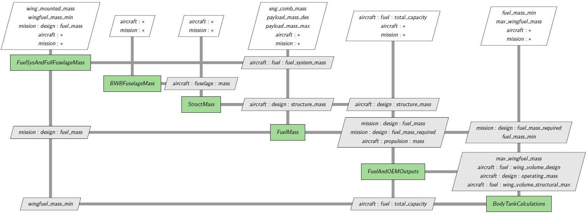

GASP based BWB model implementation#
Modeling of GASP based blended wing body (BWB) aircraft is similar to that of the conventional aircraft but with several key differences. This page is a record of the development. For users, please read Blended Wing Body Modeling in the user guide.
BWB geometry subsystem#
For BWB geomtric subsystem, we add the following components:
BWBFuselageParameters1: This component computes several fuselage geometric parameters based on user inputsBWBCabinLayout: This component computes the layout of passenger cabin for BWB. Several parameters are hard coded in this component.BWBFuselageParameters2: This component computes several fuselage geometric parameters based on both the user inputs and cabin layout.BWBFuselageSize: It carries out the computation of fuselage length and wetted area of BWB model.BWBFuselageGroup:BWBFuselageParameters1+BWBCabinLayout+BWBFuselageParameters2+BWBFuselageSizePercentNotInFuselage: For BWB, engines may be partially buried into fuselage. This component computes the percentage of corresponding surface area of nacelles not buried in fuselage. This parameter is passed toEngineSizecomponent which computes the wetted area of nacelle. This function has infinity derivatives at the two ends. We use two cubic polynomials to smooth it.BWBEngineSizeGroup:PercentNotInFuselage+EngineSize. For Tube+Wing aircraft, we assume that engines are not buried into fuselage and henceEngineSizeis good enough. But this feature can be extended to conventional aircraft.ExposedWing: Computation of exposed wing area. This is useful for BWB, but is available to tube+wing model too. ForAircraft.Wing.VERTICAL_MOUNT_LOCATIONin the range (0, 1), the function has infinity derivatives at the two ends. We use two cubic polynomials to smooth it.
BWB mass subsystem#
For design load of a BWB airctaft, variable
Aircraft.Design.WING_LOADINGis replaced byMission.Design.GROSS_MASSoverAircraft.Wing.EXPOSED_AREA. As a result,BWBLoadSpeedsandBWBLoadFactorscomponents replaceLoadSpeedsandLoadFactors. A new groupBWBDesignLoadGroupis created to include these two new components.Aviary engine geometry uses different empirical equation. In GASP, the sizing relation is based on aircraft gross weight and the number of engines. For BWB, we adopt GASP implementation. We also allow the engines that are partially buried into the fuselage. This implementation can be easily modified to apply to conventional aircraft.
Equip And Useful Load#
EquipAndUsefulLoadMassGroupincludes the computations of 19 items. Ideally, each of them should be done in its own component and one group has them all. This is a long time goal. For now, it is separated to two componentsEquipMassPartialSumandUsefulLoadMass. The air conditioning and furnishing masses are already singled out because they need to be modified for BWB.A new variable
Aircraft.Electrical.SYSTEM_MASS_PER_PASSENGERis added which corresponds toCW(15)in GASP. Its value is different for conventional aircraft and BWB.Two new components
BWBACMassandBWBFurnishingMassare added toequipment_and_useful_load.py.Note: GASP Fortran code has new updates that are not included in Aviary. We’ve updated Aviary for furnishing mass but other masses need to be checked.
Note:
EquipMassPartialSumhas implementation errors for the computations ofAircraft.APU.MASS,Aircraft.Avionics.MASS,Aircraft.AntiIcing.MASS,Aircraft.Furnishings.MASS, andAircraft.Design.EMERGENCY_EQUIPMENT_MASS. As a result, Aviary always uses user provided masses (not empirical formulas). We should use Aviary’s feature ofoverridingto override those variables.
Wing Mass Model#
For wing mass of BWB aircraft, variable
Aircraft.Wing.SPANhas to deduct cabin width (i.e.Aircraft.Fuselage.AVG_DIAMETER). As a result,WingMassSolvecomponent is replaced byBWBWingMassSolvecomponent.BWBWingMassGroupis created to pairBWBWingMassSolveandWingMassTotal.In
geometry/gasp_based/wing.py,Aircraft.Fuel.WING_VOLUME_GEOMETRIC_MAXis moved out ofWingParametersclass. In stead, a classWingVolumeis created to computeAircraft.Fuel.WING_VOLUME_GEOMETRIC_MAX. For BWB, another componentBWBWingVolumeis created for the same purpose. The algorithm is quite different for BWB.In
geometry/gasp_based/wing.py, there are two components related to wing fold:WingFoldAreaandWingFoldVolume. The first computesAircraft.Wing.FOLDING_AREAand the second computesAircraft.Fuel.WING_VOLUME_GEOMETRIC_MAX. For BWB, another classBWBWingFoldVolumeis created to do the same job. Note that for BWB,BWBWingFoldVolumeuses the result inBWBWingVolume.A
BWBWingGroupis created to put all these pieces together.Unit tests are added to make sure that the Aviary result is the same as GASP model.
Fuel Model#
FuelMassGroupgroups all fuel related components. In case of BWB,BWBFuselageMassis in place ofFuselageMass. This group has a nonlinear solver. In order for it to converge, one must provide good initial guesses for the inputs. Otherwise, it may claim that convergence is reached but gives rise to a strange solution.The computation in
BodyTankCalculationscomponent can not be matched in GASP Fortran code exactly. It is possible thatextra_fuel_volumebecomes negative. We added code to make sure that it is always positive.For fuselage mass of BWB aircraft, the empirical weight equation is quite different from conventional aircraft. It was computed in
FuselageAndStructMasscomponent. This component had two parts: fuselage mass and structural mass. In order to reuse the code for structural mass, this component is split into two components:FuselageMassandStructMass. For BWB,FuselageMassis replaced byBWBFuselageMass.Note: The historic name of
Mission.Summary.FUEL_MASS_REQUIREDisINGASP.WFAREQ, butWFAREQincludes fuel margin in GASP whileMission.Summary.FUEL_MASS_REQUIREDdoesn’t. The historic name ofMission.Summary.TOTAL_FUEL_MASSisINGASP.WFA, but does not include fuel margin in GASP whileMission.Summary.FUEL_MASS_REQUIREDdoes.Note: GASP Fortran code has features that are not implemented in Aviary (e.g. tail boom support, tip tank weight, fuselage acoustic treatment, pylon, acoustic treatment).
Comparison to GASP model
Aviary |
|
GASP |
|
Observation |
|---|---|---|---|---|
|
5972 |
WFUL |
5775 |
different unit weight of pilots and attendents |
|
972 |
WHLDEV |
974 |
In GASP, wing loading is a variable, but in Aviary, it is a constant |
|
1316 |
WFSS |
1281 |
the mass in GASP is computed after engine sizing. |
|
44471 |
WST |
45623 |
the mass in GASP is computed after engine sizing. |
|
34188 |
WFADES |
33268 |
The mass in GASP is computed after engine sizing. |
|
8628 |
WP |
8592 |
the mass in GASP is computed after engine sizing. |
|
38068 |
WFAMAX |
33268 |
The mass in GASP is computed after engine sizing. |
|
1687 |
WPES |
the mass in GASP is computed after engine sizing. |
|
|
34188 |
WFAREQ |
36595 |
Aviary does not include margin. |
Because most of the variables match pretty well. We show those with significant differences. As we see, most differences are due to the fact that GASP computes the fuel masses after engine sizing.
The fuel computation is a nonlinear system of equations. A simplied XDSM diagram is shown below:

A Newton solver is applied until Mission.Summary.FUEL_MASS, wingfuel_mass_min and Aircraft.Fuel.TOTAL_CAPACITY are converged.
For conventional aircraft, BWBFuselageMass is replaced by FuselageMass.
BWB aerodynamics#
This feature implements GASP aerodynamics subsystems for BWB aircraft. Five new components are added:
BWBBodyLiftCurveSlopeBWBFormFactorAndSIWBBWBAeroSetupBWBLiftCoeffBWBLiftCoeffClean
Two group components CruiseAero and LowSpeedAero are configured for BWB as an option (default to conventional aircraft).
In GASP, friction due to nacelle is removed from the computation of SA5. Instead, it is computed separately and is added in the drag computation. The Aviary implementation is not the same.
alpha_stall and CL_max are computed based on wing only for now. We expect that they will be updated in the future.
Table based aerodynamics is still available to BWB as long as users provide aerodynamics tables. A sample cruise aero table for BWB is available and an example using TabularCruiseAero is provided.
Comparison of BWBAeroSetup with GASP#
Variables |
GASP |
Variables |
Aviary |
|---|---|---|---|
CLAW |
4.63868 |
lift_curve_slope |
4.63868 |
BARL |
-0.14081 |
lift_ratio |
-0.14081 |
CFIN |
0.002836 |
cf |
0.002836 |
SA1 |
0.81401 |
SA1 |
0.80832 |
SA2 |
-0.15743 |
SA2 |
-0.13651 |
SA3 |
0.033989 |
SA3 |
0.033989 |
SA4 |
0.10197 |
SA4 |
0.10197 |
SA5 |
0.004464 |
SA5 |
0.009628 |
SA6 |
2.23877 |
SA6 |
2.09277 |
SA7 |
0.034136 |
SA7 |
0.040498 |
The differences are due to several reasons:
GASP has different coefficients of friction for different part of an aircraft. For this purpose, several new parameters (aero calibration factors) are added. Aviary has one single coefficient cf (an output from
AeroGeomcomponent)GASP has several factors that are included in the computation of friction (e.g. winglet, tip tank, excrescence) but not in Aviary.
GASP excludes frictions from nacelle in SA5. Nacelle friction is done in engine computation and is added in drag computation. But in Aviary, nacelle friction is included in SA5 and not in drag computation.
Comparison of CruiseAero with GASP#
Variables |
GASP |
Variables |
Aviary |
|---|---|---|---|
CLTOT |
0.41069 |
CL |
0.41067 |
CD |
0.014738 |
CD |
0.022509 |
CL/CD |
27.86518 |
L/D |
18.24451 |
As we see, CL matches closely but CD doesn’t. This is because the differences in BWBAeroSetup as we discussed above.
Comparison of LowSpeedAero with GASP#
Variables (Takeoff) |
CL (GASP/Aviary) |
CD (GASP/Aviary) |
CL/CD (GASP/Aviary) |
|---|---|---|---|
α = -2.0 |
0.07507 / 0.05787 |
0.01853 / 0.02565 |
4.05136 / 3.307513 |
α = 0.0 |
0.23964 / 0.21906 |
0.01866 / 0.02592 |
12.84433 / 9,49165 |
α = 2.0 |
0.40422 / 0.407231 |
0.02070 / 0.02844 |
20.74018 / 16.22583 |
Variables (Landing) |
CL (GASP/Aviary) |
CD (GASP/Aviary) |
CL/CD (GASP/Aviary) |
|---|---|---|---|
α = -2.0 |
0.18551 / 0.19824 |
0.02299 / 0.02962 |
8.06918 / 6.69194 |
α = 0.0 |
0.35009 / 0.35944 |
0.02292 / 0.02970 |
15.27225 / 12.10145 |
α = 2.0 |
0.51467 / 0.52062 |
0.02482 / 0.03209 |
20.74018 / 16.22583 |
As we see, CL matches closely but CD doesn’t. This is because the differences in BWBAeroSetup.
Missing features in Aviary#
In addition to the missing fetures, there are other features in GASP that are not implemented in Aviary.
GASP computes maximum CL for cruise, take-off, and landing phases but not in Aviary.
GASP computes lift curve slope (i.e. the derivative of the Lift Coeff w.r.t. Alpha), named
CLATOT.GASP computes stall alpha from the wings. For BWB, this is not sufficient. Both GASP and Aviary should enhance their models.
GASP computes excrescence drag.
Drag coefficients SA3 and SA4 are computed in Aviary but are not used.
Aviary does not have tail boom support.
Aviary does not have winglet geometry.
In GASP, a pilot weight is 170 lb and in Aviary it is 198 lb. In GASP, each attendant weights 130 lb and in Aviary it is 177 lb.
GASP has fuselage acoustic treatment.
GASP conputes tip tank weight.
GASP allows canard configurations.